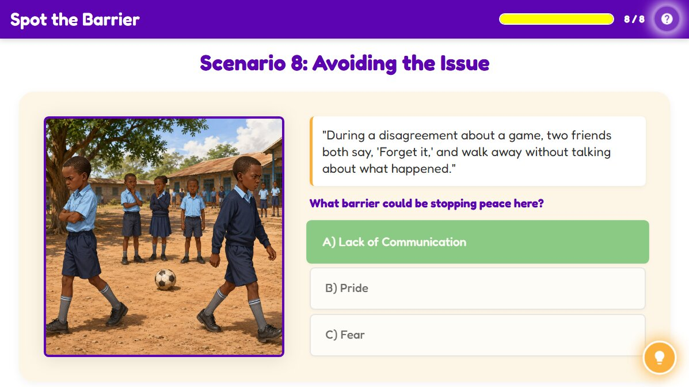

Spot the Barrier
Spot the Barrier
Activity Conclusion

Lesson Complete
Key Takeaways
| Aspect | Detail |
|---|---|
| Common Barriers | Barriers to conflict resolution include anger, fear, pride, peer pressure, and poor communication. |
| The Impact | These barriers prevent people from solving problems calmly and effectively. |
| The Solution | Recognizing and removing these barriers is the first step to resolving conflict and leads to peaceful living. |
Activity Introduction
Let us read closely and tune in like peace detectives! In this activity, you will read short scenes where learners face conflict. After each scene, it is your turn to identify the barrier that is getting in the way of peace. Ready to read, think, and choose?
Learner Instructions
- Read carefully each short scene.
- Choose the barrier that you think best matches the situation from the options.
- Read the feedback carefully. It will help you understand why the barrier fits.
- Use the Hint button if you are unsure.